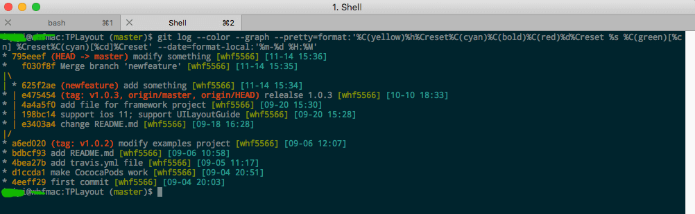
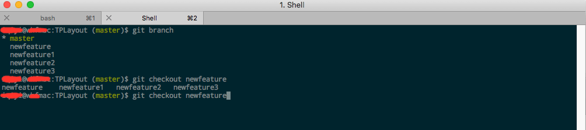
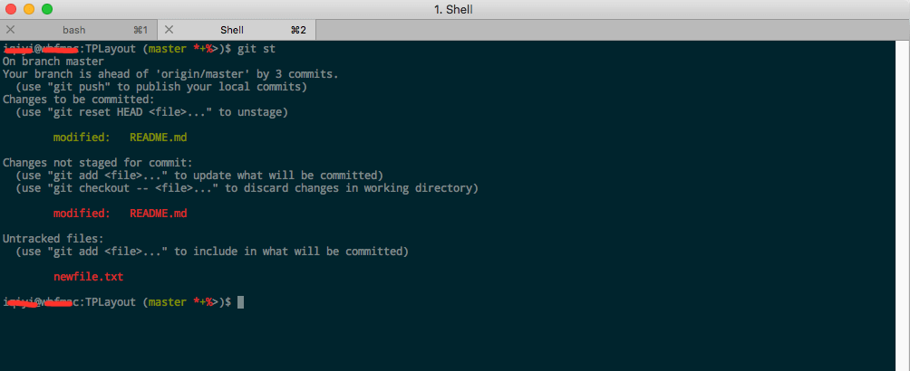

git命令行工作环境配置

Contents
转载请注明出处
前言
笔者一直使用git的图形化工具sourceTree来管理代码库，日常工作中较少的使用git命令。但最近公司给配了一台旧电脑，配置太低，只有4G内存，Xcode，chrome等应用开多了非常卡顿，于是想到在终端使用git命令来工作。在重新熟悉了git命令，使用命令行工作一段时间后，觉得命令行下的git使用起来不是那么友好，比如没有命令补全功能，查看日志界面不友好等。笔者折腾了一番，总算是弄了个让自己满意的git命令行配置。
git config 简要介绍
git的配置选项有三种：–system，–global 和 –local。其中
system是系统级别的全局设置，对所有电脑用户生效，文件在/etc/gitconfig；
global是个人用户的全局配置，对所有个人用户的代码库生效，文件在$HOME/.config/git/config或者~/.gitconfig；
local是代码库的设置，仅对设置的代码库生效，文件在代码库的.git/config。
git config常用命令
# 显示全局配置信息
git config --global --list
# 设置全局的用户名和邮箱
git config --global user.name "wellphone"
git config --global user.email wellphone@example.com
# 开启颜色
git config --global color.ui true
更加详细的配置信息见Git-配置
设置别名
git 命令一般较长，如果想少输入几个字可以设置别名，如下：
git config --global alias.st status
git config --global alias.ci commit
git config --global alias.co checkout
git config --global alias.br branch
经常敲命令的话，可以感受下使用别名带来的高效率。 除此之外，还可以创造自己的命令。比方说取消暂存文件时的输入比较繁琐，可以自己设置一下：
git config --global alias.unstage 'reset HEAD --'
然后，取消暂存文件的时候，只需要输入：
git unstage file
自定义log显示
默认不用任何参数的话，git log会按提交时间列出所有的更新，最近的更新排在最上面。每次更新都有一个SHA-1校验和、作者的名字和电子邮件地址、提交时间，最后缩进一个段落显示提交说明。但是没有图形化的分支图表来的直接美观。还好，git给我们提供了一个常用的 –pretty选项，可以指定使用完全不同于默认格式的方式展示提交历史。比如用 oneline将每个提交放在一行显示，这在提交数很大时非常有用。另外还有 short，full 和 fuller 可以用，展示的信息完全可以按照自己的喜好来。
比如笔者自己配置的这条命令：
git log --color --graph --pretty=format:'%C(yellow)%h%Creset%C(cyan)%C(bold)%C(red)%d%Creset %s %C(green)[%cn] %Creset%C(cyan)[%cd]%Creset' --date=format-local:'%m-%d %H:%M'
图：

当然，我们可以使用别名的方法来使用这条命令：
git config --global alias.lg "log --color --graph --pretty=format:'%C(yellow)%h%Creset%C(cyan)%C(bold)%C(red)%d%Creset %s %C(green)[%cn] %Creset%C(cyan)[%cd]%Creset' --date=format-local:'%m-%d %H:%M'"
输入上条命令后，以后只需要输入git lg就可以看到自定义显示的log。
更多关于log配置信息可以查看Git-基础-查看提交历史
设置自动补全命令
git 命令没有自动补全功能，这个在命令行下让人非常抓狂，尤其是在各个分支间切换的时候，狂按tab键也不能补全分支的名字。还好，有git的资深开发为我等小白准备好了自动补全功能。
如果用的是Bash shell,到git的官方源码库中的git/contrib/compleion文件夹git compleiton下载git-completion.bash文件。 将该文件复制到你自己的用户主目录中（译注：按照下面的示例，还应改名加上点：cp git-completion.bash ~/.git-completion.bash），并把下面一行内容添加到你的 .bashrc 文件中：
source ~/.git-completion.bash
在输入 Git 命令的时候可以敲两次跳格键（Tab），就会看到列出所有匹配的可用命令建议。
如图:

设置命令prompt提示
我们在使用sourceTree的时候可以很方便看见当前工作的分支，work区，stage区的修改情况。但是在命令行下，我们需要执行git status才能知道这些信息，显得不是很方便。这个情况也有资深开发替我们解决了。我们只需要简单配置下就能在命令行的prompt提示中看见当前分支及修改情况。
同样的我们需要在git官方代码库中下载git-prompt.sh文件。
1.将下载下来的文件复制到～目录下。（e.g. ~/.git-prompt.sh）
2.将以下命令加入到~/.bash_profile或者是~/.bashrc文件里
source ~/.git-prompt.sh
3.修改自己的环境变量中的PS1值，PROMPT_COMMAND值
export PS1='[\u@\h \W$(__git_ps1 " (%s)")]\$ '
export PROMPT_COMMAND='__git_ps1 "\u@\h:\W" "\\\$ "'
这时，在命令行提示符上已经可以显示当前的分支名了。 4.设置如下环境变量值
export GIT_PS1_SHOWDIRTYSTATE=true
export GIT_PS1_SHOWCOLORHINTS=true
export GIT_PS1_SHOWUNTRACKEDFILES=true
export GIT_PS1_SHOWUPSTREAM="auto"
如果设置GIT_PS1_SHOWDIRTYSTATE为非空值，则会使用（*）表示有文件未放入暂存区(unstaged files)，（+）表示暂存区有文件(staged files)。
如果设置GIT_PS1_SHOWUNTRACKEDFILES为非空值，则会使用（%）表示有没有加入到git中的文件（untracked files）。
如果设置GIT_PS1_SHOWCOLORHINTS为非空值，则会显示颜色。
如果设置GIT_PS1_SHOWUPSTREAM=“auto”，则会使用（<）表示当前节点落后远程分支，（>）表示远程分支节点落后当前分支，（=）表示当前分支和远程分支一样，（<>）表示当前分支同远程分支分叉了。
如图：

总结
以上只是笔者在日常工作中碰见的一些简单git配置方法，如果大家有更好更高效率的git命令使用方法，欢迎留言分享～～～ 附：git使用手册